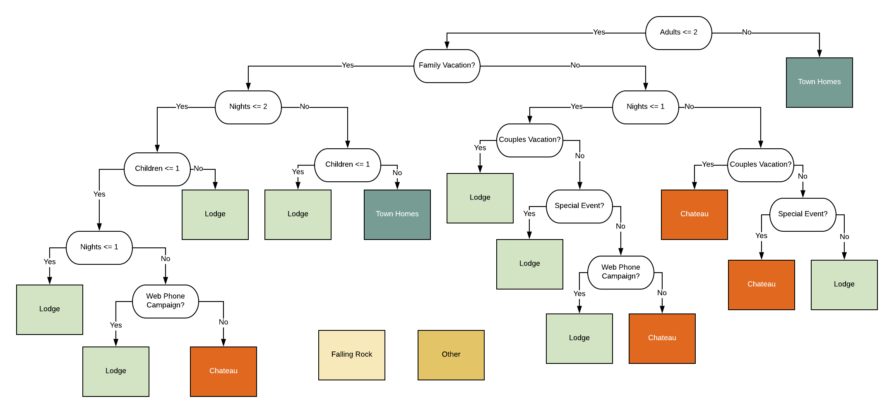
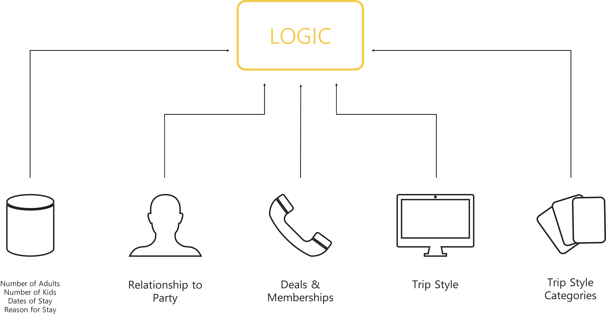

Logic
The rationale behind the logic tree and our approach to machine learning
POWERING THE USER EXPERIENCE
The Trip Planner is powered by an extensive backend logic system that curates guest recommendations. The 18-branch logic tree has its foundations in our Decision Tree model. We enriched the logic by incorporating insights from qualitative research. As prospective guests interact with the Trip Planner, it also becomes a vehicle through which Nemacolin can collect user preference and behavioral data. Ultimately, this data can be used to improve resort operations and perform targeted marketing at scale.
A Mixed-Methods Logic Tree
The 18-branch logic tree below powers the Trip Planner. The logic is responsible for the curation of the results for the guest, based on their personal preferences captured in the Quiz section of the Trip Planner. The logic tree visually represents how the guest’s responses to those key questions result in tailored recommendations.
It’s important to note that much of the guest information leveraged within the logic tree to produce recommendations is already collected by Nemacolin. However, this data is currently stored in databases that do not communicate with one another. The logic tree diagram indicates which existing data platforms currently capture a given variable about the guest.

LOGIC TREE CREATED WITH MIXED METHODOLOGY
How We Made It
MACHINE LEARNING AS DATA ANAlysis
The logic system has its foundation in machine learning. We used machine learning as a research method to explore the resort’s data and identify potential patterns in guest behavior. The first question we sought to answer with machine learning was, “Can we predict the right hotel to recommend to a guest?”
Can we use the available data to predict the right hotel to recommend to guests?

decision tree TRAIN ON crm dataset
LIMITATIONS
Using machine learning helped us understand the limitations of the datasets we had. We knew at this point that qualitative research would be useful in determining which information needs to be collected about guests in the future to build a better recommender.
Hotel Type Only
While we were able to make recommendations on what hotel guests should stay at, we were unable to provide more granular recommendations for rooms, activities and dining using only Machine Learning.
43% Accuracy
Additionally, we realized the recommender was only 43% accurate in its prediction of a guest’s hotel type. To provide a little context, if we were to randomly recommend a hotel to guests, the accuracy would be only 20%.
Discovering Additional Variables
Given these limitations, we turned to qualitative research methods to discover additional insights that allowed us to build a logic tree capable of making comprehensive recommendations. In addition to machine learning, we used semi-structured interviews with prospective guests, contextual inquiries with resort staff, analysis of 50 guest calls with resort staff, and card sorting to identify other important guest variables to collect.

Data Collection
The fragmentation of Nemacolin's datasets limits the effectiveness of how machine learning can currently be applied and used. The real value of the Trip Planner and the logic tree is that they act together as a vehicle through which Nemacolin can begin to build a separate repository of data that is not only centralized, but also annotated for machine learning. The Trip Planner will enable Nemacolin to gather the right kind of data that can be used to make better predictions all in one place, all while providing a great trip planning experience to prospective guests.
The Trip Planner collects data not only on guests’ responses to the quiz, but also in guests' interactions throughout the interface. It collects data on which results are relevant to the user, which ones they clicked on for more information, and even granular information on what time of day the guest preferred.
Nemacolin can use the data in the annotated repository to perform targeted marketing, predict demand to streamline operations, and further improve the logic of the Trip Planner. As the repository grows, Nemacolin will be able to do all of these more effectively and at scale.
SHORT TERM
Limited to individuals that have interacted with Trip Planner
LONG TERM
At scale with new audiences using psychographic data
SHORT TERM
Limited to individual categories of stay, experience, dine
LONG TERM
Comprehensive analysis across categories to create packages and to optimize resource allocation
SHORT TERM
Limited to manual testing and refinement of logic system
LONG TERM
Self-improving machine learning system capable of providing a full set of recommendations